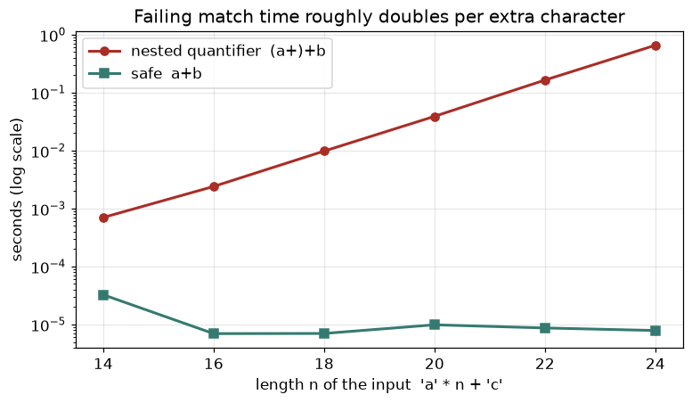

Most real data starts as text: log lines, CSV rows, JSON from an API, user comments, file names. An online shop, for example, keeps an access log with one line for every visit to its website. In this chapter you learn how Python stores text, the 20 string methods that solve 90% of cleaning jobs, the f-string mini-language for printing neat reports, and regular expressions (regex), a compact language for describing text patterns. By the end you will be able to take one raw web-server log line and pull out the method, path, status code and processing time as proper typed values.
Running example. One line from a web-server access log. It is one visit to a shop website. It tells us who asked for what and how long the server took to answer:
10.0.0.5 - - [07/Nov/2026:10:15:32 +0530] "GET /api/orders/42 HTTP/1.1" 200 512 0.480Reading left to right: client IP, two unused dashes, timestamp, the request in quotes (method, path, protocol), status code 200, bytes sent 512, and time taken 0.480 seconds.
str is an immutable sequence of Unicode characters (Chapter 1). Indexing starts at 0. Negative indexes count from the end: -1 is the last character.s[start:stop:step] takes characters from start up to but not including stop. Any part may be left out. s[::-1] reverses.r"...": backslashes are kept as they are (r"\t" is two characters, not a tab). You need these for regex and Windows paths.\n new line, \t tab, \\ backslash, \" quote.| Task | Method | Example result |
|---|---|---|
| remove spaces at both ends | s.strip() (also lstrip, rstrip) | " hi " becomes "hi" |
| cut into a list | s.split(sep, maxsplit) | "a,b".split(",") gives ['a','b'] |
| glue a list | sep.join(list) | "-".join(["a","b"]) gives "a-b" |
| replace | s.replace(old, new) | all matches replaced |
| find position | s.find(x) returns -1 if missing, s.index(x) raises ValueError | |
| test start / end | s.startswith(x), s.endswith(x) | True / False |
| test inside | x in s | True / False |
| count | s.count(x) | number of non-overlapping matches |
| case | upper, lower, title, capitalize, swapcase, casefold | |
| test type | isdigit, isalpha, isalnum, isspace, isupper | |
| pad | center, ljust, rjust, zfill | "7".zfill(3) gives "007" |
| cut a prefix or suffix | removeprefix, removesuffix | |
| split in three | partition(sep) | ('a', '=', 'b=c') |
Predict: t is the request text GET /api/orders/42?status=paid HTTP/1.1. What does t.split() give? What does t.find("zzz") give, and what does t.index("zzz") do?
s = " GET /api/orders/42?status=paid HTTP/1.1 "
print(repr(s.strip()), len(s))
t = s.strip()
print(t[0:3], t[4:], t[-8:], t[::-1][:5], t[::2][:6])
print(t.split(), t.split("/", 2), t.rsplit("/", 1))
print("-".join(["a","b","c"]), " ".join("hello world".split()))
print(t.replace("GET","POST"), t.find("api"), t.find("zzz"), t.index("api"))
try: t.index("zzz")
except ValueError as e: print("ValueError:", e)
print(t.startswith("GET"), t.endswith("1.1"), "api" in t, t.count("/"))Real output:
'GET /api/orders/42?status=paid HTTP/1.1' 43
GET /api/orders/42?status=paid HTTP/1.1 HTTP/1.1 1.1/P GT/p/r
['GET', '/api/orders/42?status=paid', 'HTTP/1.1'] ['GET ', 'api', 'orders/42?status=paid HTTP/1.1'] ['GET /api/orders/42?status=paid HTTP', '1.1']
a-b-c hello world
POST /api/orders/42?status=paid HTTP/1.1 5 -1 5
ValueError: substring not found
True True True 4Line by line:
repr(...) shows the quotes, so you can see that the two spaces on each side are gone. The original had length 43 (39 characters plus 4 spaces).t[0:3] is GET. t[4:] is everything from index 4. t[-8:] is the last 8 characters, HTTP/1.1. t[::-1] reverses the text, so the first 5 characters of it are 1.1/P. t[::2] takes every second character: GT/p/r.split() with no argument cuts on any run of whitespace. split("/", 2) cuts at most 2 times, leaving the rest in the last item. rsplit cuts from the right." ".join("hello world".split()) is the standard trick to squeeze many spaces into one.find returns -1 when there is no match, index raises an error. Prefer in when you only need yes/no, because -1 is a valid-looking index and causes silent bugs.Predict: What is "a,b,,c".split(",")? And "a b c".split(" ") versus "a b c".split()?
print("a,b,,c".split(","), "a b c".split(" "), "a b c".split())
print("line1\nline2\r\nline3".splitlines(), "x".center(7,"*"), "7".zfill(3), "ab".ljust(5,".")+"|", "ab".rjust(5)+"|")
print("www.site.com".removeprefix("www."), "file.csv".removesuffix(".csv"))
print("a\tb", r"a\tb", len("a\tb"), len(r"a\tb"))
print("abc".partition("b"), "a=b=c".partition("="), "a=b=c".rpartition("="))
print("Straße".upper(), "ß".casefold(), "STRASSE".casefold() == "straße".casefold())
print(ord("A"), chr(97), chr(8377), "\N{INDIAN RUPEE SIGN}")
s2 = "abc"
try: s2[0] = "z"
except TypeError as e: print("TypeError:", e)
print("abc" < "abd", "B" < "a", sorted(["b","A","a","B"]), sorted(["b","A","a","B"], key=str.lower))Real output:
['a', 'b', '', 'c'] ['a', 'b', '', 'c'] ['a', 'b', 'c']
['line1', 'line2', 'line3'] ***x*** 007 ab...| ab|
site.com file
a b a\tb 3 4
('a', 'b', 'c') ('a', '=', 'b=c') ('a=b', '=', 'c')
STRASSE ss True
65 a ₹ ₹
TypeError: 'str' object does not support item assignment
True True ['A', 'B', 'a', 'b'] ['A', 'a', 'b', 'B']What to learn:
split(",") keeps empty pieces between two commas. split(" ") also does, but split() with no argument skips empty pieces. For messy spaces use split().splitlines() handles \n and \r\n (Windows line endings), a very common surprise in files from other systems.r"a\tb" has 4 characters (the backslash and the t are kept), while "a\tb" has 3 (a real tab).casefold() is the strong, Unicode-aware version of lower(). Use it to compare text without caring about case: German ß becomes ss.ord gives the number of a character, chr does the reverse. ₹ is code 8377."B" < "a" is true (capitals come first). To sort ignoring case, pass key=str.lower.s2[0] = "z" fails. t = G E T / a p i ...
+ve 0 1 2 3 4 5 6 7
-ve -n ... -2 -1
t[0:3] -> "GET" (index 0,1,2; stop 3 not included)
t[4:] -> from index 4 to the end
t[-8:] -> last 8 characters
t[::-1] -> step -1 = backwardsEach character has two addresses: a positive one counting from the left and a negative one counting from the right. The stop number is a boundary, not a character, which is why t[0:3] has exactly 3 characters (stop - start).
| Method | Example | Where it appears in the job |
|---|---|---|
strip, lower | clean a column of city names | Data cleaning before joins |
split, unpack | parse key=value pairs | Config and log parsing |
join | build a CSV line or SQL list | Report generation |
startswith | filter file names | ETL file pickers |
casefold | compare user input | Deduplicating names and emails |
str.strip().str.lower() in pandas uses the same method names).+= in a big loop (slow, because each step makes a new string). Collect parts in a list and use "".join(parts) once. Another: forgetting that methods return new strings, so s.strip() alone does nothing; you need s = s.strip().Check yourself
"hello"[1:4]?Answer: "ell" (indexes 1, 2, 3).
casefold() instead of lower() for comparison?Answer: It handles Unicode special cases (like ß) so text with different case compares equal.
find and index when the text is missing?Answer: find returns -1; index raises ValueError.
An f-string is a string with f before the quote. Inside { } you put any expression and, after a colon, a format spec: {value:fill align width , .precision type}. Common pieces:
| Spec | Meaning | Example |
|---|---|---|
.1f | 1 decimal place | 480.4567 gives 480.5 |
>10 <10 ^10 | right, left, center in 10 characters | |
, or _ | thousands separator | 1,250,000 |
.1% | multiply by 100, 1 decimal, add % | 0.25 gives 25.0% |
03d | integer, zero padded to width 3 | 5 gives 005 |
x, b | hexadecimal, binary | 255 gives ff |
= after name | print name and value (debugging) | {mins=} |
!r | use repr() | shows quotes |
Older styles still appear in old code: "{} {}".format(a, b) and "%s %d" % (a, b). Learn to read them, write f-strings.
Predict: What does f"{pct:.1%}" give for pct = 0.25?
name, mins, pct = "apple", 480.4567, 0.25
print(f"{name} took {mins:.1f} mins")
print(f"{name:>10}|{name:<10}|{name:^10}|")
print(f"{1250000:,} {1250000:_} {pct:.1%} {255:x} {255:#b} {5:03d} {mins:10.2f}|")
print(f"{mins=}", f"{name!r}", f"{2+3*4}", f"{{literal}}")
w = 8; print(f"{name:>{w}}|")
print("{} took {} mins".format(name, 480), "{0}-{0}-{1}".format("a","b"), "{n}:{v:.2f}".format(n="x", v=1.5))
print("%s took %d mins (%.1f%%)" % (name, 480, 25.0))Real output:
apple took 480.5 mins
apple|apple | apple |
1,250,000 1_250_000 25.0% ff 0b11111111 005 480.46|
mins=480.4567 'apple' 14 {literal}
apple|
apple took 480 mins a-a-b x:1.50
apple took 480 mins (25.0%)480.4567 rounded to one decimal is 480.5, and to two decimals 480.46.{mins:10.2f} means width 10, 2 decimals, so the number is padded with spaces on the left.{{ and }} print literal braces. {2+3*4} runs the expression and shows 14. The width itself can be a variable: {name:>{w}}.Predict: What happens with f"{'abc':d}"?
rows = [("book", 480, 0.0), ("shoes", 1250, 0.5), ("lamp", 3100, 12.25)]
print(f"{'item':<8}{'mins':>7}{'late%':>8}")
for l, m, e in rows: print(f"{l:<8}{m:>7,}{e:>8.2f}")
try: print(f"{'abc':d}")
except ValueError as e: print("ValueError:", e)Real output:
item mins late%
book 480 0.00
shoes 1,250 0.50
lamp 3,100 12.25
ValueError: Unknown format code 'd' for object of type 'str'Text columns are left-aligned (<8) and numbers right-aligned (>7), so digits line up. Asking for d (integer) on a string is an error, and the message names both the code and the type. Fix by using s for strings or no code at all.
f"{mins:>10,.2f}"
| | | | |
| | | | +-- type: f = fixed decimals
| | | +---- precision: 2 digits after the point
| | +------ thousands separator
| +-------- width: 10 characters, align right (>)
+----------- the value (any expression)Read the spec from left to right: align, width, separator, precision, type. Most of the time you only need two or three of them.
| Spec | Example | Where it appears in the job |
|---|---|---|
:.2f | f"{rmse:.2f}" | Model metrics in reports |
:, | f"{rows:,}" | Row counts in logs |
:.1% | f"{err:.1%}" | Error rates, accuracy |
{x=} | f"{n_rows=}" | Quick debugging output |
epoch 3 loss 0.2154.f"""...""".f"{date:%Y/%m/%d}/part-{i:04d}.csv").Check yourself
3.14159 with 2 decimals?Answer: f"{3.14159:.2f}" gives 3.14.
f"{0.07:.0%}" print?Answer: 7%.
Answer: Double them: {{ and }}.
é instead of é).₹ is code point 8377.é takes 2, ₹ takes 3, most emoji take 4. It is the standard for the web and for new files.str.encode("utf-8") gives bytes. bytes.decode("utf-8") gives str. If the code book is wrong, you get UnicodeDecodeError, or silent garbage ("mojibake").open(path, encoding="utf-8") always names the encoding explicitly. Do not trust the default, it differs between systems.errors="replace" puts � in place of bad bytes, errors="ignore" drops them. Both hide problems, so use them only when you accept data loss.Predict: If we encode "café ₹" as UTF-8 and then wrongly decode it with Latin-1 (an older code book), do we get an error or garbage?
s = "café ₹"
b = s.encode("utf-8")
print(b, len(s), len(b))
print(b.decode("latin-1"))
print(b"caf\xe9".decode("latin-1"))
try: b"caf\xe9".decode("utf-8")
except UnicodeDecodeError as e: print("UnicodeDecodeError:", e)
print(b"caf\xe9".decode("utf-8", errors="replace"), b"caf\xe9".decode("utf-8", errors="ignore"))Real output:
b'caf\xc3\xa9 \xe2\x82\xb9' 6 9
café â¹
café
UnicodeDecodeError: 'utf-8' codec can't decode byte 0xe9 in position 3: unexpected end of data
caf� café is 2 bytes and ₹ is 3).café â¹. That is mojibake, and it is worse than an error because nobody notices. If you see é in your data, someone read UTF-8 as Latin-1.\xe9 is the letter é in Latin-1, but in UTF-8 it is the start of a longer character, so UTF-8 raises an error.errors="replace" gave caf� and errors="ignore" gave caf. Both lose data.Predict: Two strings both look like é. Are they equal?
import tempfile, os, unicodedata
with tempfile.TemporaryDirectory() as d:
p = os.path.join(d, "x.txt")
with open(p, "w", encoding="utf-8") as f: f.write("café ₹\n")
print(open(p, "rb").read())
print(open(p, encoding="utf-8").read().strip())
print(open(p, encoding="latin-1").read().strip())
a = "e\u0301" # letter e + combining accent
b = "\u00e9" # one single character
print(a, b, a == b, len(a), len(b), unicodedata.normalize("NFC", a) == b)Real output:
b'caf\xc3\xa9 \xe2\x82\xb9\n'
café ₹
café â¹
é é False 2 1 Trueencoding="utf-8" gives the right text. Reading it as Latin-1 gives mojibake again.a and b print identically but are different strings: one is two code points, the other one. == is False. unicodedata.normalize("NFC", ...) converts both to one standard form so they compare equal. Normalise text before you compare or deduplicate it. "é" --encode("utf-8")--> b'\xc3\xa9' --decode("utf-8")--> "é" (correct)
|
+--decode("latin-1")--> "é" (mojibake)The same two bytes can mean different text, depending on which code book you use to read them. So the reader must know the encoding. UTF-8 is the safe default.
| Situation | Symptom | Fix |
|---|---|---|
| CSV exported from Excel on Windows | UnicodeDecodeError | try encoding="utf-8-sig" or "cp1252" |
| Names in two systems | José fails to match José | unicodedata.normalize("NFC", s) |
| API returns bytes | you see b'...' | .decode("utf-8") |
Text shows é | wrong decoding upstream | find where UTF-8 was read as Latin-1 |
errors="ignore" to make an error go away. You hide data loss. Find the true encoding first (ask the source team, or check the file's byte-order mark).Check yourself
Answer: Latin-1 assigns a character to every byte value, so any bytes decode. The text is simply wrong.
Answer: open(path, encoding="utf-8"), naming the encoding every time.
"é" == "é" be False?Answer: One may be a single code point and the other a letter plus a combining accent. Normalise with unicodedata.normalize.
split and find work when the text has a fixed shape ("cut at the comma"). But what if you must find "any 3 digits that stand alone" or "an e-mail address"? A regular expression (regex) is a mini language to describe the shape of text, like a search form: "digits, a dot, digits". You write the shape once, and the engine finds every piece of text with that shape.| Word | Meaning |
|---|---|
| Pattern | the regex string, e.g. r"\d+" |
| Match | a piece of text that fits the pattern |
| Group | a part of the pattern in ( ) whose matched text you want back |
| Greedy | takes as much text as it can (default). Lazy takes as little as it can (add ?) |
| Anchor | a position, not a character: ^ start, $ end, \b word edge |
| Piece | Meaning |
|---|---|
. | any one character (except new line) |
\d \w \s | a digit, a word character (letter, digit, _), a whitespace |
\D \W \S | the opposite of the above |
[abc] [a-z] [^abc] | one of those characters / a range / none of those |
* + ? | 0 or more, 1 or more, 0 or 1 |
{3} {2,4} | exactly 3, between 2 and 4 |
| `a\ | b` |
( ) and (?P<name> ) | a group, and a named group |
^ $ \b | start of text, end of text, word edge |
(?<=x) (?=x) | look-behind and look-ahead: "preceded by x" / "followed by x", without taking x |
\1 | the same text as group 1 again (back-reference) |
Always write patterns as raw strings (r"...") so Python does not eat the backslashes.
The functions in module re:
| Function | What it does |
|---|---|
re.search(p, s) | first match anywhere, or None |
re.match(p, s) | match only at the start |
re.fullmatch(p, s) | the whole string must match |
re.findall(p, s) | list of all matches (or of group contents) |
re.finditer(p, s) | iterator of match objects |
re.sub(p, repl, s) | replace matches; repl may be text or a function |
re.split(p, s) | split at matches |
re.compile(p, flags) | prepare a pattern once and reuse it |
Flags: re.I ignore case, re.M ^ and $ per line, re.S dot matches new line, re.X verbose (allows spaces and comments in the pattern).
Predict: re.findall(r"\b\d{3}\b", log) looks for stand-alone 3-digit numbers. Which values will it return?
import re
log = '10.0.0.5 - - [07/Nov/2026:10:15:32 +0530] "GET /api/orders/42 HTTP/1.1" 200 512 0.480'
print(re.search(r"\d+", log).group(), re.match(r"\d+", log).group(), re.match(r"GET", log))
print(re.findall(r"\d+\.\d+\.\d+\.\d+", log))
print(re.findall(r"\b\d{3}\b", log))Real output:
10 10 None
['10.0.0.5']
['200', '512', '480']\d+ means "one or more digits". The first match is 10 at the very start. re.match also gives 10 because the log starts with digits. re.match(r"GET", log) is None because GET is not at the start. This is the main difference between match and search.\d+\.\d+\.\d+\.\d+ is "digits dot digits dot digits dot digits": the IP address. The \. is a literal dot, because a bare . would mean "any character".\b\d{3}\b finds three digits with a word edge on both sides. It found 200 (status), 512 (bytes) and 480 (the digits after the dot in 0.480). It did not return 2026 (4 digits), +0530 (4 digits), or 42 (2 digits). Notice 480 was a false positive: the pattern knows nothing about meaning. That is why real parsing uses a full pattern with named groups, as below.Predict: What will m.groupdict() contain for status: the number 200 or the text '200'?
m = re.search(r'"(?P<method>[A-Z]+) (?P<path>\S+) HTTP/[\d.]+" (?P<status>\d{3}) (?P<bytes>\d+) (?P<secs>[\d.]+)', log)
print(m.groupdict())
print(m.group("path"), m.start("path"), m.end("path"), m.span())
d = m.groupdict(); print(int(d["status"]) + 1, float(d["secs"])*1000)Real output:
{'method': 'GET', 'path': '/api/orders/42', 'status': '200', 'bytes': '512', 'secs': '0.480'}
/api/orders/42 47 61 (42, 85)
201 480.0status is '200', not the number 200. You convert it yourself (int(...)). This is the same lesson as Chapter 1.(?P<name>...) gives a group a name, so you read m.group("path") instead of counting brackets.m.span() is (42, 85): the matched text starts at index 42 and ends before index 85. m.start("path") is 47.float("0.480") * 1000 = 480.0 ms.Problem 3.4.1 Parse the full log line into a record with typed values: IP, timestamp, method, path, status (int), bytes (int) and processing time in whole milliseconds. Then try three lines, one of them garbage, and count the parsed lines.
| Step 1 | Describe the line piece by piece: IP \S+, two ignored words \S+ \S+, timestamp inside [ ] as [^\]]+ (any characters except ]), request in quotes, status \d{3}, bytes \d+, seconds [\d.]+. |
|---|---|
| Step 2 | Anchor with ^ and $ so the whole line must match, and name every group. |
| Step 3 | Convert: int(status), int(bytes), round(float(secs) * 1000). |
| Step 4 | Loop over lines and use the walrus := (Chapter 2) to keep only lines that match. |
| Answer | The code below parses two lines, skips the garbage line, and produces ms = 480 for the first. |
| Check | float("0.480") * 1000 is 480.0, which rounds to 480. The two parsed status codes are '200' and '500', and the sum of seconds is 0.480 + 3.100 = 3.58, matching the output. |
| Why it matters | This is the first step of every log-analysis pipeline. Skipping bad lines (instead of crashing) is what makes a parser usable on real files. |
pat = re.compile(r'^(?P<ip>\S+) \S+ \S+ \[(?P<ts>[^\]]+)\] "(?P<method>[A-Z]+) (?P<path>\S+) [^"]+" (?P<status>\d{3}) (?P<bytes>\d+) (?P<secs>[\d.]+)$')
rec = pat.match(log).groupdict()
rec["status"] = int(rec["status"]); rec["bytes"] = int(rec["bytes"]); rec["ms"] = round(float(rec.pop("secs"))*1000)
print(rec)
lines = [log, '10.0.0.7 - - [07/Nov/2026:10:15:40 +0530] "POST /api/pay HTTP/1.1" 500 87 3.100', 'garbage line']
parsed = [m.groupdict() for l in lines if (m := pat.match(l))]
print(len(parsed), [p["status"] for p in parsed], sum(float(p["secs"]) for p in parsed)){'ip': '10.0.0.5', 'ts': '07/Nov/2026:10:15:32 +0530', 'method': 'GET', 'path': '/api/orders/42', 'status': 200, 'bytes': 512, 'ms': 480}
2 ['200', '500'] 3.58Predict: For <b>bold</b> and <i>it</i>, does <.+> find 4 tags or 1 piece?
print(re.sub(r"\d+\.\d+\.\d+\.\d+", "x.x.x.x", log)[:20])
print(re.sub(r"(\w+)@(\w+)\.com", r"\2:\1", "asha@acme.com, ravi@zeta.com"))
print(re.sub(r"\d+", lambda m: str(int(m.group())*2), "a1 b22 c333"))
print(re.split(r"[,;]\s*", "a, b;c, d"), re.split(r"(,)", "a,b"))
text = "<b>bold</b> and <i>it</i>"
print(re.findall(r"<.+>", text), re.findall(r"<.+?>", text))
print(re.findall(r"^\w+", "ab cd\nef gh", re.M), re.findall(r"HELLO", "hello Hello", re.I))
print(re.findall(r"(?<=\$)\d+", "cost $45 and $120"), re.findall(r"\d+(?=%)", "5% of 20 and 30%"))
print(re.findall(r"(\w)\1", "aabbcd hello"), re.sub(r"\s+", " ", "a b \n c"))Real output:
x.x.x.x - - [07/Nov/
acme:asha, zeta:ravi
a2 b44 c666
['a', 'b', 'c', 'd'] ['a', ',', 'b']
['<b>bold</b> and <i>it</i>'] ['<b>', '</b>', '<i>', '</i>']
['ab', 'ef'] ['hello', 'Hello']
['45', '120'] ['5', '30']
['a', 'b', 'l'] a b csub can use group numbers in the replacement (\2:\1 swaps the parts) and can take a function that receives each match and returns the new text (a1 b22 c333 becomes a2 b44 c666). A function is the tool for "replace using a calculation". Use sub to mask PII (personal data): replace IP addresses or phone numbers before sharing logs.( ) in split keeps it in the result.<.+> took as much as possible, from the first < to the very last >, giving one big piece. Lazy <.+?> stops at the first >, giving four tags.re.M makes ^ match at the start of every line (ab and ef). re.I ignores case.(?<=\$)\d+ finds numbers preceded by $ without including the $. Look-ahead \d+(?=%) finds numbers followed by %: 5 and 30, but not 20.(\w)\1 finds a character followed by itself: a, b, l (from aa, bb, ll in hello).Predict: Is a.b+c@x.co.in a valid e-mail for our simple pattern?
print(re.fullmatch(r"\d{10}", "9876543210") is not None, re.fullmatch(r"\d{10}", "98765432100") is not None)
email = re.compile(r"^[\w.+-]+@[\w-]+(\.[\w-]+)+$")
print([bool(email.match(x)) for x in ("a@b.com","a.b+c@x.co.in","bad@","@x.com")])
print(re.escape("a.b*c"), re.findall(re.escape("1.5"), "1.5 and 125"))
verbose = re.compile(r"""
(?P<h>\d{2}): # hours
(?P<m>\d{2}) # minutes
""", re.X)
print(verbose.search("at 14:05 sharp").groupdict())
import time
t=time.perf_counter(); re.search(r"(a+)+b", "a"*24+"c"); bad_seconds = time.perf_counter()-t
t=time.perf_counter(); re.search(r"a+b", "a"*24+"c"); good_seconds = time.perf_counter()-t
print(bad_seconds > 0.05, good_seconds < 0.01)Real output:
True False
[True, True, False, False]
a\.b\*c ['1.5']
{'h': '14', 'm': '05'}
True Truefullmatch demands the whole string match. A 10-digit phone number passes, an 11-digit one does not.bad@ and @x.com. Real e-mail rules are much more complicated, so this is a sanity check, not a full validator. The only real proof is to send an e-mail.re.escape adds backslashes so special characters are read literally. Use it when the search text comes from a user or a file, otherwise 1.5 would also match 125.re.X lets you lay out a long pattern over several lines with comments. Do this for any pattern longer than a line.(a+)+b on aaaa...c makes the engine try an exponential number of ways to split the as before giving up (catastrophic backtracking). Both checks printed True: the bad pattern took more than 0.05 seconds on just 25 characters (the exact time depends on your machine, and it doubles with every extra a), while the safe pattern took under 0.01 seconds. Avoid nested repeats like (x+)+. On web servers, a bad regex plus user input can freeze a service (a "ReDoS" attack).Pattern: \b \d{3} \b Text: ... "HTTP/1.1" 200 512 0.480
| | | ^^^ ^^^ ^^^
edge 3 digits edge | | |
match match match (false positive!)
Groups: "(?P<method>[A-Z]+) (?P<path>\S+)" on "GET /api/orders/42 ..."
| |
'GET' '/api/orders/42'Think of the engine as a cursor that slides over the text. At each position it asks, "can the pattern start here?" It reports a match when yes, and moves on when no.
| Regex idea | Example | Where it appears in the job |
|---|---|---|
| Named groups | parse an access log | Log analysis, data ingestion |
sub | mask phone numbers or IPs | Privacy engineering (PII masking) |
fullmatch | validate an ID format | Data validation rules |
findall | pull all hashtags or numbers from text | NLP preprocessing, feature extraction |
lazy .+? | extract text between HTML tags | Quick scrapers (but prefer a real parser for HTML) |
order_id and delivery_minutes out of application logs to join with the orders table.html.parser or BeautifulSoup for HTML, and json for JSON. Another mistake: forgetting the raw string ("\d" instead of r"\d"), which gives a warning in recent Python versions. And forgetting that . needs \. when you mean a literal dot.re.X and comments to keep it readable.Check yourself
re.match and re.search?Answer: match only tries at the start of the string. search looks anywhere.
.+? do differently from .+?Answer: .+ is greedy (takes as much as possible). .+? is lazy (as little as possible).
re.escape?Answer: So characters like . and * are read as plain characters and not as regex operators.
Section 3.4 gave you the core of regular expressions. This section adds the tools that make them readable and safe (named groups, lookarounds, verbose mode), the one regex failure that can take a server down (catastrophic backtracking), and three standard-library helpers for text: unicodedata, textwrap and string.Template.
A named group (?P<name>...) lets you read a match by name instead of by number, so the pattern survives edits. A lookahead (?=...) asks "is this text coming next?" without consuming it. A lookbehind (?<=...) asks "was this text just before?". A negative lookahead (?!...) asks "is this NOT coming next?". Quantifiers are greedy by default (take as much as possible); adding ? makes them lazy (take as little as possible).
Problem 3.5.1 From "2026-03-05 ERROR disk=/dev/sda1 used=93%" extract the date, level and percent by name, then rewrite the date as day/month/year.
| Pattern | (?P<date>\d{4}-\d{2}-\d{2}) (?P<level>[A-Z]+) .* used=(?P<pct>\d+)% |
|---|---|
| Read | m.group("date"), or m["pct"], or m.groupdict() for all. |
| Rewrite | re.sub with \g<d>/\g<m>/\g<y> in the replacement reorders named groups. |
import re
log = "2026-03-05 ERROR disk=/dev/sda1 used=93%"
m = re.search(r"(?P<date>\d{4}-\d{2}-\d{2}) (?P<level>[A-Z]+) .* used=(?P<pct>\d+)%", log)
print(m.group("date"), m.group("level"), int(m["pct"]))
print(m.groupdict())
print(re.sub(r"(?P<y>\d{4})-(?P<m>\d{2})-(?P<d>\d{2})", r"\g<d>/\g<m>/\g<y>", log[:10]))2026-03-05 ERROR 93
{'date': '2026-03-05', 'level': 'ERROR', 'pct': '93'}
05/03/2026Problem 3.5.2 In "cost: $40, tax: $3, fee: 5 EUR, 7 USD" find (a) numbers followed by " USD", (b) numbers right after a dollar sign, (c) words before a colon except "tax". Then show greedy versus lazy on "<b>one</b> and <b>two</b>".
| (a) | \d+(?= USD): digits, then a lookahead for " USD" that is not part of the match. |
|---|---|
| (b) | (?<=\$)\d+: digits that have $ immediately before them. The $ is not in the match. |
| (c) | \b(?!tax)\w+(?=:): at a word start, refuse if "tax" follows, take the word, require a colon after it. |
| Greedy | <b>.*</b> runs to the LAST closing tag, so it returns one long match. Lazy .*? stops at the first. |
import re
prices = "cost: $40, tax: $3, fee: 5 EUR, 7 USD"
print(re.findall(r"\d+(?= USD)", prices))
print(re.findall(r"(?<=\$)\d+", prices))
print(re.findall(r"\b(?!tax)\w+(?=:)", prices))
html = "<b>one</b> and <b>two</b>"
print(re.findall(r"<b>.*</b>", html))
print(re.findall(r"<b>.*?</b>", html))['7']
['40', '3']
['cost', 'fee']
['<b>one</b> and <b>two</b>']
['<b>one</b>', '<b>two</b>']Problem 3.5.3 Make a long pattern readable with re.VERBOSE, which ignores whitespace and allows # comments.
import re
pat = re.compile(r"""
(?P<user>[\w.]+) # name part
@
(?P<host>[\w.-]+) # domain
""", re.VERBOSE)
print(pat.fullmatch("ada.l@example.org").groupdict()){'user': 'ada.l', 'host': 'example.org'}.* across a whole line. The greedy example above swallowed two tags into one match. For HTML use a parser; for simple single-line fields use lazy quantifiers or a negated class such as [^<]*.Python's re tries alternatives one by one and goes back (backtracks) when one fails. A pattern with a quantifier inside a quantifier, such as (a+)+b, can split the same run of letters in exponentially many ways. On input that almost matches (many a then a c) the engine tries every split before giving up. A ReDoS (regular expression denial of service) is an attack that sends such input to a server. The safe pattern a+b fails instantly on the same text.

How to read it: the vertical axis is logarithmic, so a straight rising line means exponential growth: each extra character multiplies the time by a roughly constant factor (about 2 here). The flat green line is the safe pattern. Going from 14 to 24 characters costs the red pattern hundreds of times more, and if the trend continued, 40 characters would take many hours.
import re, time
def steps(pattern, n):
s = "a" * n + "c"
t = time.perf_counter()
re.match(pattern, s)
return time.perf_counter() - t
slow = [steps(r"(a+)+b", n) for n in (16, 20, 22)]
print(slow[2] / slow[0] > 20)
print(steps(r"a+b", 5000) < 0.01)True
TrueThe first line says that going from 16 to 22 characters made the nested pattern more than 20 times slower. The second says the safe pattern handled 5,000 characters in under 10 milliseconds. Defences: avoid nested quantifiers, limit input length before matching, and for untrusted input consider a linear-time engine such as the third-party re2 bindings (not run here).
The same visible text can be stored in different ways. "é" can be one code point (U+00E9) or an "e" followed by a combining accent (U+0301). They look identical but compare as different. unicodedata.normalize converts to a standard form: NFC composes (one code point where possible) and NFD decomposes. Always normalise before comparing or deduplicating user text. str.casefold() is the aggressive lowercase for comparisons: it turns "ß" into "ss", which lower() does not.
Problem 3.5.4 Compare two spellings of "café", normalise, strip accents, then wrap and template some text.
| Step 1 | "caf\u00e9" has 4 code points, "cafe\u0301" has 5 (both print as "café"), and == says False. |
|---|---|
| Step 2 | After NFC both have 4 and compare equal. |
| Step 3 | NFD splits "é" into "e" plus a combining mark; dropping marks (unicodedata.combining(c) is non-zero) leaves "cafe". |
| Step 4 | textwrap.fill breaks lines at a width; shorten cuts to a width with a placeholder. Template uses $name and is safe for user-supplied templates because it cannot run code. |
import unicodedata, textwrap
from string import Template
a = "caf\u00e9" # one code point for e-acute
b = "cafe\u0301" # e plus a combining accent
print(a == b, len(a), len(b))
na, nb = (unicodedata.normalize("NFC", s) for s in (a, b))
print(na == nb, len(na), len(nb))
d = unicodedata.normalize("NFD", a)
print(len(d), [unicodedata.name(c) for c in d[-2:]])
print("".join(c for c in d if not unicodedata.combining(c)))
print("ss" == "ß".casefold(), "ß".lower() == "ss")
text = "Python makes it easy to wrap long lines of text for terminals and emails."
print(textwrap.fill(text, width=30))
print(textwrap.shorten(text, width=30, placeholder="..."))
t = Template("Dear $name, you owe $$$amount.")
print(t.substitute(name="Ada", amount=40))
print(t.safe_substitute(name="Ada"))False 4 5
True 4 4
5 ['LATIN SMALL LETTER E', 'COMBINING ACUTE ACCENT']
cafe
True False
Python makes it easy to wrap
long lines of text for
terminals and emails.
Python makes it easy to...
Dear Ada, you owe $40.
Dear Ada, you owe $$amount.$$ in a template is a literal dollar sign. safe_substitute leaves unknown names untouched instead of raising KeyError, which is why the last line still shows $amount.
s[start:stop:step], and remember stop is not included.strip, split, join, replace, find, startswith, lower, casefold first."".join(list), not with += in a loop.{value:>10,.2f} controls alignment, separator, decimals and type.str, data is bytes. Always name the encoding, and use UTF-8.é, UTF-8 was read as Latin-1. If two identical-looking strings differ, normalise with unicodedata.fullmatch to validate, sub with a function to transform.(a+)+: they can freeze a program.| Pattern | Example |
|---|---|
| Slice | s[2:5], s[-3:], s[::-1] |
| Clean and split | s.strip().split(",") |
| Join | ",".join(parts) |
| Format | f"{x:,.2f}", f"{p:.1%}", f"{n:05d}" |
| Encode / decode | s.encode("utf-8"), b.decode("utf-8") |
| Find one | re.search(r"(?P<n>\d+)", s) |
| Find all | re.findall(r"\d+", s) |
| Validate | re.fullmatch(r"\d{10}", s) |
| Replace | re.sub(r"\s+", " ", s) |
| Compile once | pat = re.compile(r"...", re.X) |
Problem 3.P.1 (easy) What is "performance"[2:6]?
Answer: "rfor". Indexes 2, 3, 4, 5 are r, f, o, r.
Problem 3.P.2 (easy) What is "a-b-c".split("-", 1)?
Answer: ['a', 'b-c']. The second argument is the maximum number of cuts.
Problem 3.P.3 (easy) Write an f-string that prints 0.4567 as a percentage with one decimal.
Answer: f"{0.4567:.1%}" gives 45.7%.
Problem 3.P.4 (what is the output?)
s = "hello"
s.upper()
print(s)Answer: hello. upper() returns a new string and we threw it away. Use s = s.upper().
Problem 3.P.5 (what is the output?) import re; print(re.findall(r"\d+", "a12b345c6"))
Answer: ['12', '345', '6']. Each run of digits is one match.
Problem 3.P.6 (computation) How many bytes does "₹100" take in UTF-8?
Answer: 6 bytes. ₹ is 3 bytes, and each of the digits 1, 0, 0 is 1 byte: 3 + 3 = 6.
Problem 3.P.7 (find the bug)
import re
print(re.findall("\d+\.\d+", "version 3.14 and 2.7"))Answer: The pattern is not a raw string. Recent Python versions warn about the invalid escape \d. Use r"\d+\.\d+". The result is ['3.14', '2.7'].
Problem 3.P.8 (find the bug) A regex to get the text inside the first bracket pair from "[a] and [b]" returns the wrong text:
re.search(r"\[(.+)\]", "[a] and [b]").group(1)Answer: It returns a] and [b because .+ is greedy. Use the lazy form r"\[(.+?)\]", which returns a.
Problem 3.P.9 (scenario) You read a CSV from a partner and names like Zoë show as Zoë. What happened and what do you do?
Answer: The file is UTF-8 but was read as Latin-1 (or similar). Re-read with open(path, encoding="utf-8") (or pandas.read_csv(..., encoding="utf-8")). Do not "fix" it with errors="ignore".
Problem 3.P.10 (scenario) Write one line that extracts all status codes (3-digit numbers after a closing quote and a space) from a log string text.
Answer: re.findall(r'" (\d{3}) ', text). For our sample line it returns ['200']. The group in ( ) makes findall return only the digits.
Problem 3.P.11 (interview) "What is the difference between str and bytes in Python 3?"
Answer: str is text, a sequence of Unicode characters. bytes is raw binary data, a sequence of numbers 0-255. You convert with encode (str to bytes) and decode (bytes to str), and must name an encoding such as UTF-8.
Problem 3.P.12 (interview) "Why can a regex be dangerous in production, and how would you reduce the risk?"
Answer: A pattern with nested repeats, like (a+)+b, can take exponential time on some inputs (catastrophic backtracking), which can freeze a service. Avoid nested quantifiers, keep patterns simple, limit input length, use fullmatch with anchors, and test with long non-matching input.
Problem 3.P.12 (build) Write slugify(title): remove accents, lowercase, replace every run of characters that are not letters or digits with a single -, and strip - from both ends. Test "Crème Brûlée & Café!".
import re, unicodedata
def slugify(title):
d = unicodedata.normalize("NFKD", title)
ascii_text = "".join(c for c in d if not unicodedata.combining(c))
return re.sub(r"[^a-z0-9]+", "-", ascii_text.lower()).strip("-")
print(slugify("Crème Brûlée & Café!"))creme-brulee-cafeAnswer: as shown. NFKD splits accented letters into base plus mark, the generator drops the marks, and the regex turns "space, ampersand, space" into one hyphen. The trailing "!" becomes a final hyphen that strip("-") removes. Self-check: does an input of only punctuation give an empty string?
Problem 3.P.13 (find the bug) A teammate finds decimals with re.findall(r"\d+.\d+", text). On "1.5 and 2x7" it returns two matches. Why, and what is the fix?
import re
print(re.findall(r"\d+.\d+", "1.5 and 2x7"), re.findall(r"\d+\.\d+", "1.5 and 2x7"))['1.5', '2x7'] ['1.5']Answer: An unescaped . means "any character", so 2x7 matches. Escape it as \. to mean a literal dot.
Problem 3.P.14 (build) Turn "user=ada level=3 ok=yes" into a dictionary using one findall.
import re
line = "user=ada level=3 ok=yes"
print(dict(re.findall(r"(\w+)=(\w+)", line))){'user': 'ada', 'level': '3', 'ok': 'yes'}Answer: With two groups, findall returns a list of pairs, and dict turns pairs into keys and values. Values stay strings, so convert level with int if you need a number.
Problem 3.P.15 (interview) Your login form validates the username with ^(\w+\s?)+$. A security reviewer says it is a ReDoS risk. Explain, and give two fixes.
Answer: (\w+\s?)+ has a quantifier inside a quantifier, and the optional \s? means a run of letters can be split into groups in exponentially many ways. A long name ending in an illegal character (for example "aaaa...a!") forces the engine to try all splits before failing. Fixes: (1) rewrite so each position has only one way to match, such as ^\w+(\s\w+)*$; (2) check len(name) <= 64 before running the regex.
Problem 3.P.16 (stretch, rubric) Write a function parse_log_line(line) that uses one verbose, named-group regex to parse "2026-03-05 ERROR disk=/dev/sda1 used=93%" into a dict with int pct, and returns None for a line that does not match. Rubric (1 point each): (1) re.VERBOSE with comments; (2) named groups; (3) fullmatch or anchors so junk is rejected; (4) returns None, never raises, on bad lines; (5) you tested three good lines and two bad ones.
Answer: No single answer; 5/5 is full marks. Use Problem 3.5.1 as the starting pattern and add the disk part as another named group.
You are my patient, practical professor. I am a working professional moving into data roles, and English is my second language, so use simple words and short sentences. Teach me Python string slicing and the 15 most useful string methods for cleaning text. Use a web-server log line as the running example. For each method show a small example, ask me to predict the output first, and explain with a picture of index positions. End with three questions to check me.
You are my patient, practical professor. I am a working professional moving into data roles, and English is my second language. Teach me Python f-string formatting: alignment, width, decimals, thousands separator, percent, zero padding and the {x=} debug form. Give me 8 graded exercises, from easy to hard, where I must write the format string for a given output. Do not give solutions until I answer. Then review my answers and explain mistakes in simple words.You are my patient, practical professor. I am a working professional moving into data roles, with English as a second language. Explain text encoding in Python: Unicode, UTF-8, bytes vs str, mojibake, UnicodeDecodeError, errors="replace", and Unicode normalisation. Use real examples such as a CSV with Indian names. Then quiz me one question at a time, wait for my answer, and explain why each answer is right or wrong.
You are my patient, practical professor. I am a working professional moving into data roles, and English is my second language. Teach me regular expressions in Python from zero: character classes, quantifiers, groups, named groups, greedy vs lazy, anchors, look-ahead, re.sub with a function, and catastrophic backtracking. Build one pattern step by step to parse an access-log line. Then give me 6 graded regex exercises with no solutions. Here is a pattern I am stuck on: [PASTE HERE]
You are my patient, practical professor. I am a working professional moving into data roles, with English as a second language. Run a mock interview on Python text processing: strings, immutability, f-strings, encoding, and regular expressions. Ask one question at a time, include two small coding questions that I answer by typing code, give a score from 1 to 5 for each answer, show a model answer, and finish with a list of my weak points and what to practise next.